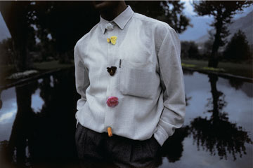
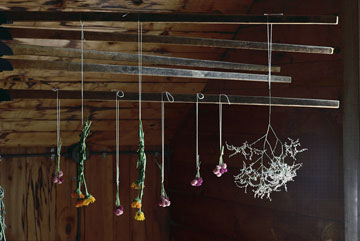
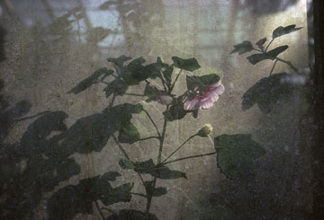
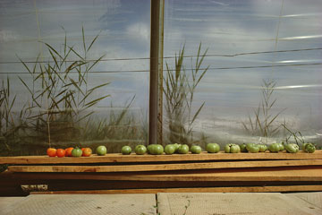
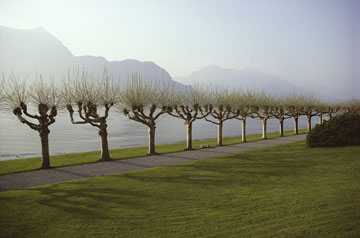

|
> Previous Exhibitions > 2007 > Sam Abell | Seeing Gardens
Previous Exhibitions
2007
2013 | 2012 | 2011 | 2010 | 2009 | 2008 | 2007 | 2006 | 2005 | 2004
2003 | 2002 | 2001 | 2000
Sam Abell
Seeing Gardens
6 - 7 April 2007
11-5, Tuesday - Saturday
Special Preview and Conversation with the Artist
Thursday 5 April | 5:30 - 7:30 pm
Artist Talk
Sunday 22 April | 3 - 5 pm

Sam Abell, After the Wedding, Shalimir Garden, Kashmir
1998. 20 x 24"

Sam Abell, Sabbathday Lake, Maine

Sam Abell, Rose Mallow, Chelsea Physic Garden, London

Sam Abell, Potter's Garden, Hagi, Japan

Sam Abell, Kitchener, Ontario, Canada

Sam Abell, Plane Trees, Villa Melzi, Lake Como, Italy
See artist page for more images > |